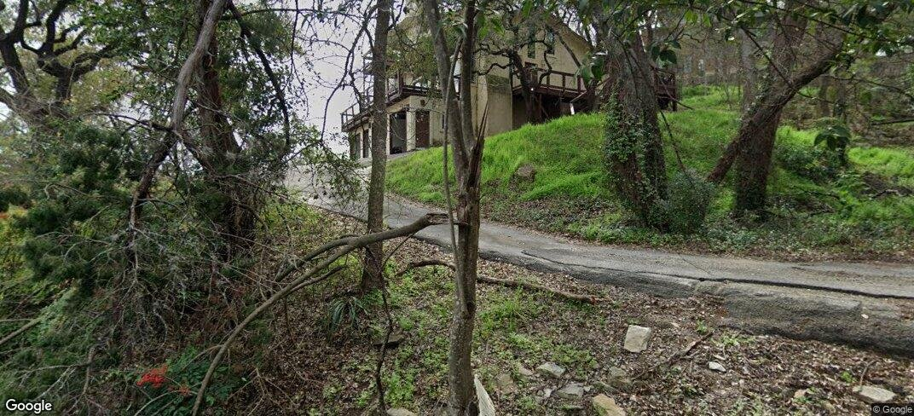
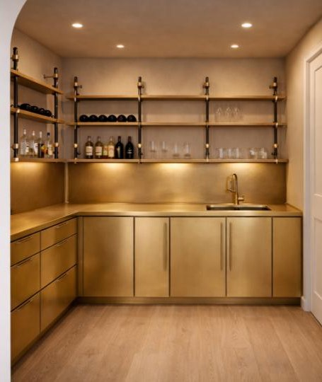
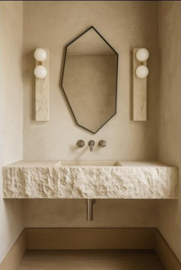
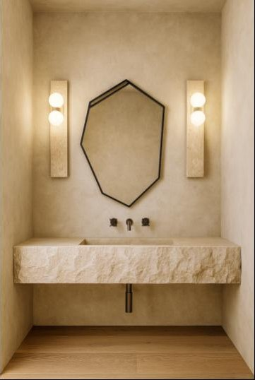
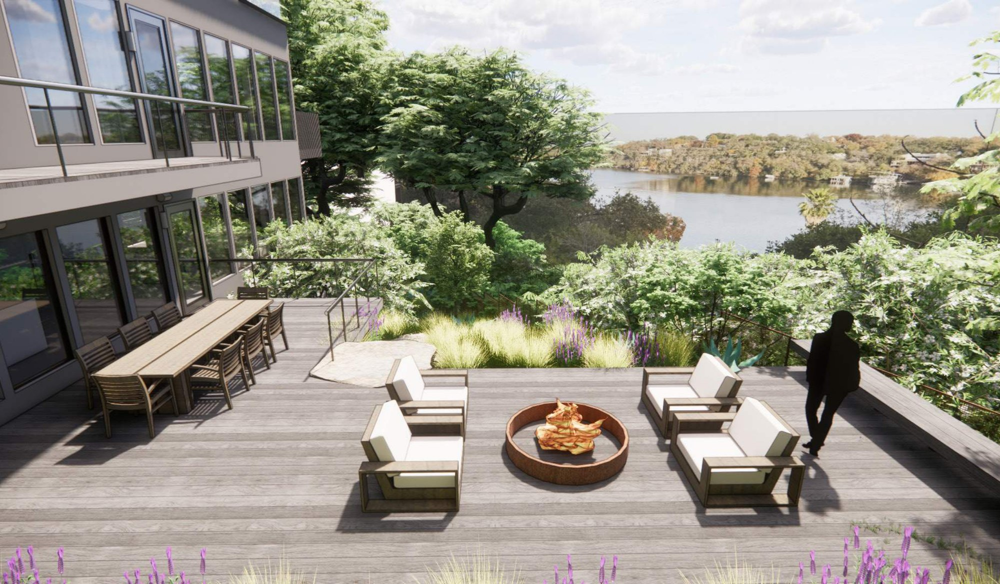

Prouvé
3801 Island Way
A Lake Austin Residence
3801 Island Way
A Lake Austin Residence
A decades-old house on one of the great sites of Lake Austin — small rooms, dated finishes, and a front-row seat it never took.



Every window already knew what this place could be.

Quiet modernism on Lake Austin —
texture, proportion, and the long view.
A modern, minimal envelope where interest comes from craftsmanship, not contrast. Organic, soft, light-filled rooms designed to feel serene, welcoming, and elevated. Natural, grounding colors let every room blend into the landscape — and the water takes center stage.
Raw, beautiful materials add character and patina. Modern furniture and lighting hold clean lines against carefully curated vintage pieces that add soul. And here and there — a pop of rock & roll.


Architectural studies — three stories rising from a limestone base to a rooftop open to the sky, wrapped by a slatted screen tower.
First impressions: hand-troweled plaster, a sculptural console, and Austin on the wall.

A pause between spaces — a fluted floating console, woven leather artwork, rattan light.

White oak, one dramatic stone, and light — a kitchen that whispers rather than shouts.


Behind the kitchen, a working pantry wrapped in the same white oak — so even the hardest-working room feels composed.
The heart of the living floor — a wall of glass holding the lake.
A curved desk, layered shelving, and a door that closes on the world.
A private floor pointed at the water — bedroom, dressing room, and a bath carved in travertine.

The primary bath — vein-cut travertine, a sculpted tub, and white oak warmth.
The promised pop of rock & roll — a room dressed entirely in brushed brass.

Four rooms, four moods — each built on marble, white oak, and a single strong idea.


The powder room — a hand-carved Calacatta Monet sink, Roman clay walls, and candlelight temperatures.

Bath Two — Calacatta Gold and Atlas Grey, with a dark reeded vanity.

Bath Three — Casablanca Carrara calm over Bardiglio grey.

Bath Four — Calacatta Viola drama with aged brass.
The finale — dining, fire, and open sky above the tree line, with Lake Austin in every direction.
Native grasses, limestone boulders, and stone paths — the hillside handed back to Texas.




Held inside the canopy — the house reads as a quiet object in the trees.
Natural, grounding colors pulled from the site itself — limestone, oak, water, and sky.
Four levels stepping up the hillside — from the water to the sky.